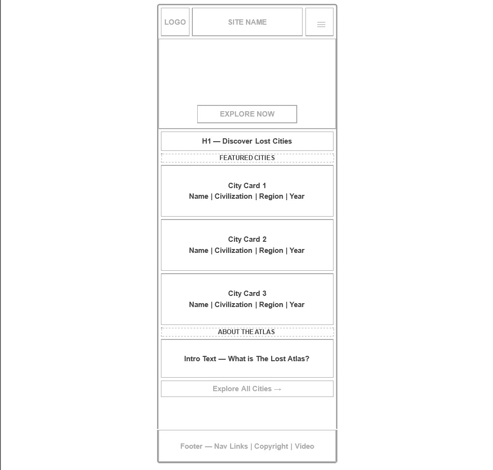
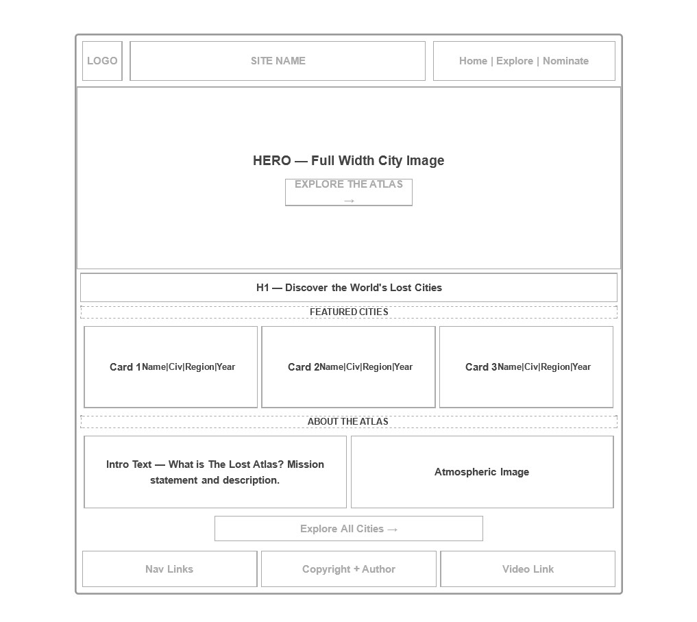

Site Name
Name: The Lost Atlas
The name combines "Lost," which represents forgotten civilizations and hidden histories with "Atlas," which evokes maps, exploration, and a comprehensive reference guide. Together the name positions the site as the guide for exploring history's vanished cities. It is concise, memorable, and immediately communicates the purpose of the site.
Optional domain: thelostAtlas.com
Site Purpose
The Lost Atlas is an interactive reference site dedicated to exploring the world's most fascinating lost and ancient cities. The site provides users with a searchable, filterable directory of 20+ lost cities, each with details on their civilization of origin, geographic location, discovery year, current archaeological status, and the mystery surrounding their disappearance.
Users can explore individual city profiles through immersive modal dialogs, view each city's coordinates on an embedded map, bookmark cities using local storage, and filter the directory by civilization, region, or era. The site also includes a nomination form allowing users to suggest undiscovered or lesser-known sites for consideration.
Scenarios
These are questions a typical visitor to The Lost Atlas might ask:
- Which ancient civilizations built the most mysterious lost cities, and what do we know about their disappearance?
- I want to explore lost cities by region — how can I find cities located specifically in South America or the Middle East?
- What is the current archaeological status of Petra — is it still being excavated, or is it fully discovered?
- I heard about a lost city I would like to suggest — how can I submit it to be added to the atlas?
Color Scheme
The palette draws from volcanic rock, desert sand, ancient gold, jungle moss, and sandstone — evoking mystery, history, and discovery.
Volcanic Black
#111008
Page background
Desert Earth
#2a2115
Cards, surfaces
Artifact Gold
#c9a84c
Headings, accents, links
Parchment
#e8e6e1
Body text
Terracotta
#8b4513
Borders, highlights
Jungle Moss
#4d5e45
Tags, badges
Faded Sandstone
#b5a886
Muted text, borders
Typography
Cinzel — Headings, Site Name, Navigation
The Lost Atlas
Historical, classical serif — evokes ancient inscriptions and map cartography
Raleway — Body Text, Descriptions, UI Elements
Petra, carved into rose-red cliffs in southern Jordan, was the capital of the Nabataean Kingdom and one of the most remarkable archaeological sites in the world.
Clean, modern sans-serif — readable, elegant, pairs well with Cinzel
Wireframes
Home Page

